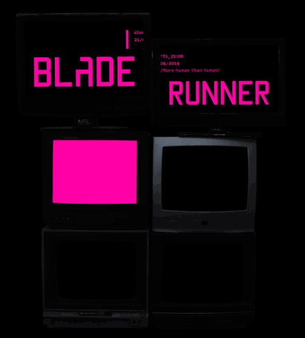

3 Fascinating Facts About Blade Runner
Though Ridley Scott's original 1982 film's got a modern update with Blade Runner 2049, we're taking a look behind the scenes of one of the most iconic sci-fi movies of all time.

Ridley Scott used some of Stanley Kubrick's THE SHINING footage for the original ending
Another major change between the theatrical and director’s cut versions of Blade Runner is the ending, which was originally a happy one: Rachael and Deckard drive through the countryside, and we hear in the voiceover that Rachael is a new kind of replicant who can live as long as humans do. For the backdrop of that scene, Scott used outtakes from Stanley Kubrick’s The Shining.
The TITLE comes from a completely different story
Blade Runner’s title comes from William S. Burroughs’ Blade Runner (a movie), a film treatment based on Alan E. Nourse’s 1974 novel The Bladerunner (alternatively published as The Blade Runner). That book has nothing to do, content-wise, with Dick’s book or Scott’s movie; its plot involves a black market for medical services. Scott just liked the term as a description for Deckard’s replicant-hunting cop. The film was originally titled Dangerous Days.
It's CURSED
It might not be quite as hardcore-cursed as Poltergeist or The Omen, but Blade Runner has a curse of its own … on the businesses whose logos appear in the film. Atari, Pan Am, RCA, Cuisinart, and Bell Phones all suffered severe business problems in the years shortly after Blade Runner’s release, as did Coca-Cola, whose 1985 “New Coke” experiment was less than successful. Members of the Blade Runner production team refer to this as the “product-placement Blade Runner curse.”